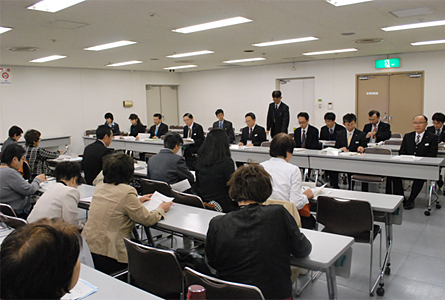
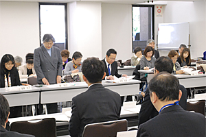

11月19日（水）午後1時30分より、埼玉県県民健康センターの大会議室で、埼玉県と第50回埼玉県消費者大会実行委員会との懇談会がおこなわれました。当日、県からは8部局（16課）31人、消費者団体実行委員団体16団体26人が出席しました。

懇談会は、10月21日に開催された第50回埼玉県消費者大会で確認された県への「要請書」についておこなわれ、大会で要請した事項の各項目（抜粋）について県の各所管より口頭で回答がありました。
懇談会の冒頭、埼玉県県民生活部消費生活課の竹中健司課長、第50回埼玉県消費者大会実行委員会の森 和江大会実行委員長代理より挨拶がありました。
竹中課長は、「第50回埼玉県消費者大会が1200人の参加で盛会に開催され、活発な議論がおこなわれたことをお喜びします。県への消費者相談で高齢者からの相談件数が過去最高の1万7218件、全体の相談件数約5万件の36.8パーセントに増加しています。スマートフォンやインターネット関連の相談、また昨年は健康食品送り付けの相談が増え、その6割が60歳以上からとなっています。県では、消費生活講座やホームページ等で消費者への注意喚起、啓発をおこなっていますが、次々に新しい手口での悪質商法が起きていることから、出来る限りの対策に取り組んでいます。消費者被害防止は行政だけでなく、消費者団体との連携が必要です」と挨拶されました。

森 和江実行委員長代理は、「本日は、懇談の時間を設けていただき、ありがとうございます。10月21日、埼玉会館において第50回埼玉県消費者大会を開催しました。全体会には県内各地より1,200人、午後の分科会にも600人を超える消費者が参加しました。知事にもご臨席いただき、消費者団体、消費者大会の果たしてきた役割の大きさや、期待することについてお話をいただき、あらためて私たちの50年の歩みに確信を持つとともに、未来に向かって力をあわせていくことの大切さを実感することができました。提出をした要請書は、県内27団体の皆さんが4月から7回の実行委員会を開催し、話し合いを積み重ねてきた中でつくりあげてきたもの。県内消費者の思いが詰まっています。ぜひ、本日の懇談が実りあるものになるようにと思っております」と挨拶を述べました。
要請した6分野のうち23項目について回答いただき、質疑応答を持ちました
懇談は、課題別に前後半に分けておこなわれました。前半「教育、子育て」「原発と放射能問題・環境」「消費者行政」について、後半「くらし・医療・介護・福祉」「農業と食の安全」「核兵器の廃絶」について、最初に消費者大会実行委員会の岩岡宏保事務局長より要請事項の概要が説明され、担当部局より回答を受けて質疑応答がありました。
 前の記事 第50回埼玉県消費者大会まとめ、次大会への引継事項を確認しました
前の記事 第50回埼玉県消費者大会まとめ、次大会への引継事項を確認しました
（消費者大会第7回実行委員会）